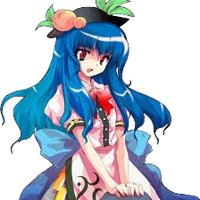

Tenshi é frequentemente vista como:
Arrogante e orgulhosa – ela se considera superior por ser uma celestial e gosta de demonstrar isso.🧠 Inteligência e impulsividade
Tenshi não é burra, mas age sem pensar:
Entende as situações ao seu redor
Mas prefere agir antes de refletir
Toma decisões baseadas em emoção
Ela muitas vezes cria problemas que poderia evitar.
😈 Comportamento provocador
Tenshi adora provocar os outros:
Gosta de desafiar pessoas fortes
Se diverte criando caos em Gensokyo
Age como se tudo fosse um jogo
Ela quer testar sua força e aliviar seu tédio.
🌩️ Natureza rebelde
Mesmo sendo uma celestial, Tenshi não segue regras:
Desobedece a ordem do Céu
Causa terremotos e incidentes
Busca viver aventuras perigosas
Ela prefere a liberdade ao dever.
👥 Relação com os outros
Suas relações são baseadas em rivalidade e desafio:
Provoca Reimu Hakurei constantemente
Enfrenta youkai e humanos sem distinção
Não leva a maioria das pessoas a sério
Mas no fundo, gosta de interações que a tirem do tédio.
Celestial
Tenshi vive no Céu, onde os celestiais desfrutam de uma existência sem sofrimento.
Causadora de incidentes
Por tédio, ela frequentemente desce até Gensokyo e causa distúrbios, como terremotos e mudanças no equilíbrio da terra.
Manipulação da terra
O poder central de Tenshi é controlar a terra e o solo:
Criar terremotos
Manipular rochas e montanhas
Alterar o terreno ao seu redor
Controlar a energia da terra
Espada de Hisou
Ela empunha a espada celestial Hisou no Tsurugi, capaz de controlar o fluxo da terra e do céu, aumentando seu poder em batalha.
Resistência celestial
Como uma celestial, Tenshi possui resistência muito superior à de humanos e youkai comuns.
Voo e combate danmaku
Ela pode voar livremente e lutar usando padrões de danmaku baseados em energia terrestre e celestial.
Sua combinação de poder bruto e personalidade impulsiva a torna uma adversária extremamente perigosa.
.
Espécie: Celestial
Título: Jovem Senhora de Bhavagra (Young Mistress of Bhavagra)